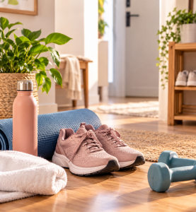

SONO & ROTINA
Sono: pequenas mudanças para organizar melhor a rotina da noite
Hábitos e ambiente podem ajudar a preparar a noite e tornar a rotina de descanso mais organizada.
Ler matériaHábitos, alimentação, movimento e descanso explicados de forma simples, sem promessas milagrosas e com espaço para uma rotina possível.
Informações práticas para incorporar cuidado à vida real.
Hábitos e ambiente podem ajudar a preparar a noite e tornar a rotina de descanso mais organizada.
Ler matériaComo comer melhor sem transformar alimentação em sinônimo de gastar mais.
Ler matéria →
Ideias simples para colocar mais movimento na rotina sem precisar começar pela academia.
Ler matéria →Um espaço para hábitos e cuidados cotidianos sem exageros ou fórmulas prontas.
Em preparaçãoConteúdos práticos sobre bem-estar para aplicar aos poucos no cotidiano.
Em preparaçãoQuando fizer sentido, você encontra nossas escolhas em uma vitrine separada.